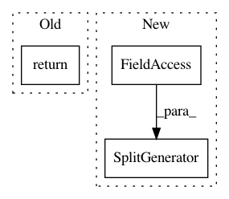

ecf2583ed663faa52da43a058189c799392e6502,tensorflow_datasets/image/scene_parse_150.py,SceneParse150,_split_generators,#SceneParse150#Any#,62
Before Change
// TODO(scene_parse_150): Downloads the data and defines the splits
// dl_manager is a tfds.download.DownloadManager that can be used to
// download and extract URLs
return [
tfds.core.SplitGenerator(
name=tfds.Split.TRAIN,
// TODO(scene_parse_150): Tune the number of shards such that each shard
// is < 4 GB.
num_shards=10,
// These kwargs will be passed to _generate_examples
gen_kwargs={},
),
]
def _generate_examples(self):
// TODO(scene_parse_150): Yields examples from the dataset
yield {}
After Change
},
),
tfds.core.SplitGenerator(
name=tfds.Split.TEST,
num_shards=10,
gen_kwargs={
"images_dir_path" : os.path.join(dl_paths["images"], "validation"),
"annotations_dir_path": os.path.join(dl_paths["annotations"], "validation")
},
),
]
def _generate_examples(self, images_dir_path, annotations_dir_path):
In pattern: SUPERPATTERN
Frequency: 3
Non-data size: 3
Instances
Project Name: tensorflow/datasets
Commit Name: ecf2583ed663faa52da43a058189c799392e6502
Time: 2019-04-01
Author: navinmohan81@gmail.com
File Name: tensorflow_datasets/image/scene_parse_150.py
Class Name: SceneParse150
Method Name: _split_generators
Project Name: tensorflow/datasets
Commit Name: aeb1206db0884104edd4a07cfa528705dce6f699
Time: 2020-07-28
Author: shlens@google.com
File Name: tensorflow_datasets/image_classification/imagenet.py
Class Name: Imagenet2012
Method Name: _split_generators
Project Name: tensorflow/datasets
Commit Name: 7f0558f6c7cba90e69c5760106ed10d551501e49
Time: 2018-09-27
Author: rsepassi@google.com
File Name: tensorflow_datasets/core/file_format_adapter_test.py
Class Name: DummyTFRecordBuilder
Method Name: _dataset_split_generators